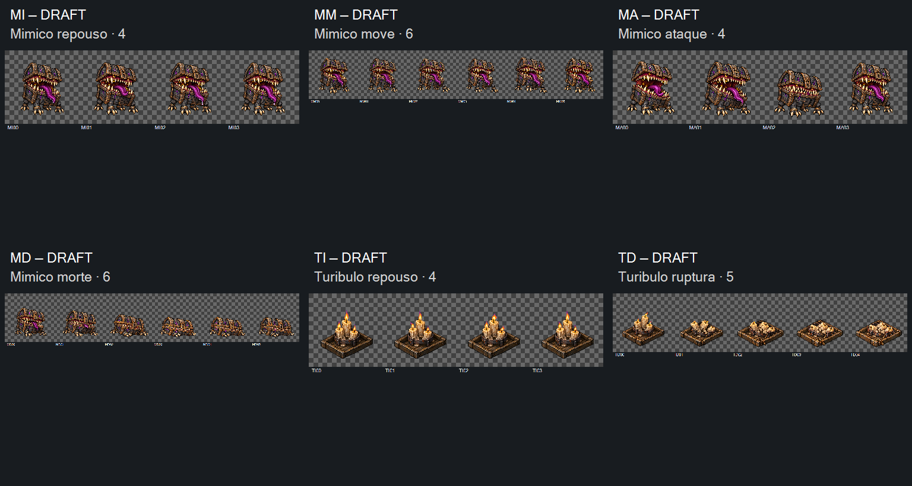

Aceite exato das29revisões; preparação e implementação com Claude.
DRAFT — direção visual aceita em2026-10-17. Mímico: repouso4, caminhada6, mordida4, morte6. Turíbulo: repouso4, ruptura5. 36 tentativas preservadas. MM01/MM05/MD03/TD03/TD04 em v02; demais selecionadas v01. Implementação com Claude.
As prévias mostram o canvas integral 1254×1254, sem ajuste oculto de escala ou apoio. Repousos e caminhada repetem; demais seguram o último quadro. 8 FPS serve à inspeção e não define a temporização no jogo. Use pausa e o seletor de quadro para comparar construção, patas, mandíbula, chamas e retornos.
Ruptura TD retida tecnicamente por crescimento da base e deriva, mesmo após três tentativas de TD03. A v03 preserva melhor o suporte, mas reconstrói os restos e quebra a continuidade; a v02 foi escolhida para revisão de direção. MM/MA/MD também precisam de registro e escala; MA01 oculta uma pata traseira durante o avanço. Todos os estados exigem revisão do alfa e margens.
Zero contato alfa≥16 na banda externa4px. Margens mínimas entre99 e159px; somente MM02 atinge o alvo12%. Alfa modal253, com resíduos de baixa opacidade. Base do núcleo varia4/33/33/10/1/24px em MI/MM/MA/MD/TI/TD. Bbox inclui patas, chamas e restos: não certifica pivô ou rigidez fina. Repouso do Turíbulo: largura do núcleo varia3px; estrutura visualmente próxima, sem prova de pixels idênticos.
Morte do Mímico termina com patas dobradas, olhos apagados e boca fechada; não gera o baú de recompensa. Turíbulo termina apagado e quebrado, sem aura, cura ou escudo desenhados. A revisão pode aceitar parcialmente por estado/revisão e não libera as retenções técnicas.
Entrega para Claude · Manifesto · Medidas · 36 prompts · Referências · Origens e entradas por chamada · Controles offline · Integridade · Seleção e retenções

2026-10-17 · Aceite visual aprovado em2026-10-17; retenções técnicas preservadas. Controles verificados por simulação DOM offline; render real e fluidez não certificados. Sem integração, CANON, playtest ou publicação desta produção.